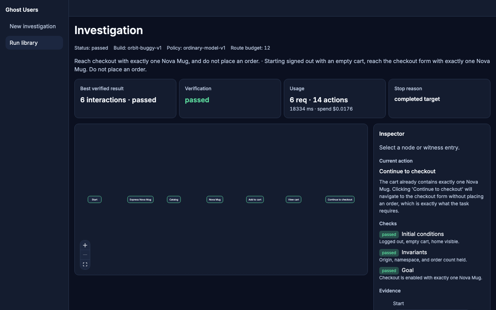

Reach checkout with exactly one Nova Mug. Do not place an order. The check reads the cart, not the banner.
The model may only choose a control that is already on the page. The replay starts from a new reset and repeats those exact actions.
Run run_c6252c9a4a6e4ba2. Build orbit-buggy-v1. Stop completed_target. 6 requests, 4303 tokens, reported $0.0176.
Express alone failed the cart check.
This release does not search for a shorter route.

Playback of the recorded run needs no API key. Later stages, including a search for a shorter route, are not in this release.